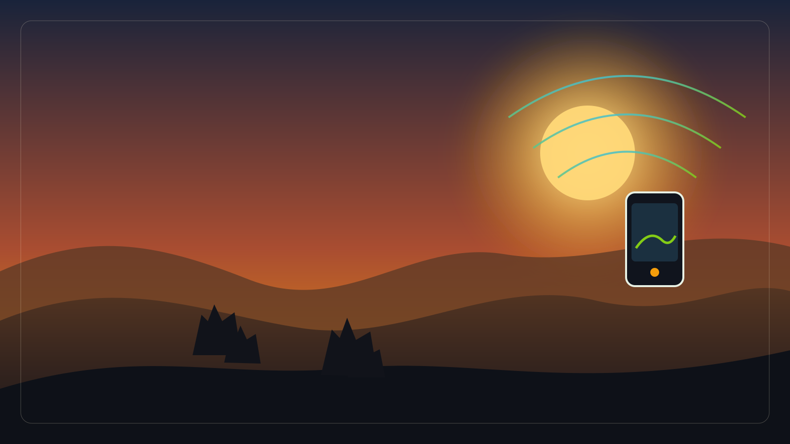
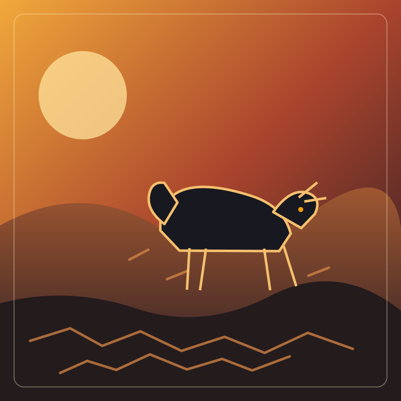

A voice on her phone
when the land starts to fail.
Satellites see the drought weeks before the herder does. We pick up that signal, translate it into Swahili or English, and call her on the phone she already owns.

Every dry season, the same story.
Families lose livestock they spent years building up. The signal is already in the sky — it just never reaches the phone. Read the full story →

Photo: replace with the image you want to anchor this section on.
Three ways. One phone. No data plan.
No app to install. No menus to learn. She talks, she taps, she texts — whichever she prefers.


Satellite → AI → her phone. That's the product.
Satellite
Watches the ward every 5 days.
ArdaLink AI
Spots trouble, writes the brief.
Voice · USSD · SMS
Calls the herder, sends the keyword reply.
Herder decides
Move the herd, buy feed, wait.